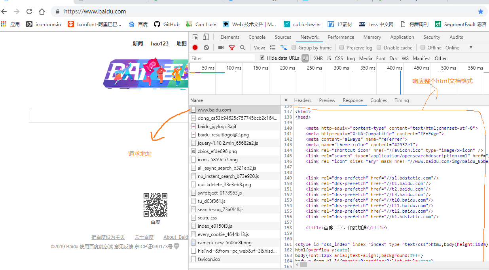
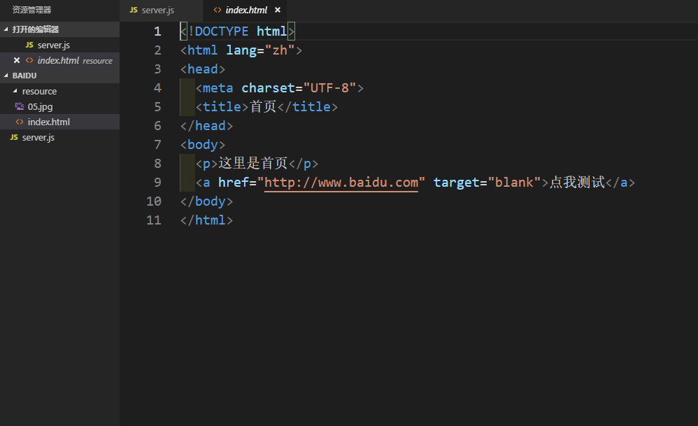
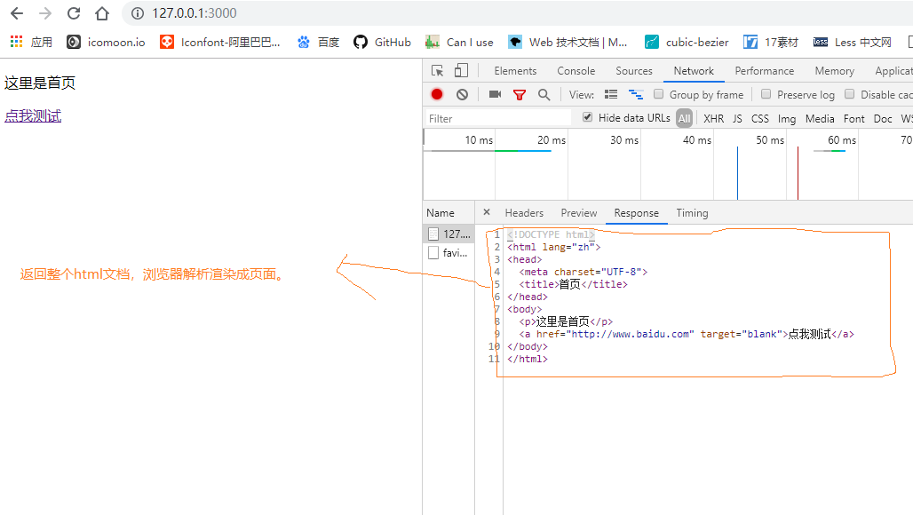
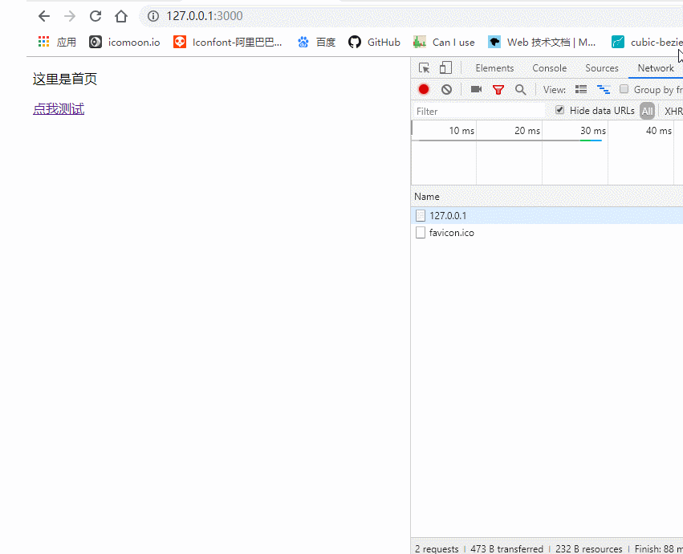

我们前面已经学习完了Node中一些核心模块还有如何正确配置响应头的Content-Type，今天我们来实现一个简单的demo，巩固下之前学习的内容。
我们平时访问百度或者其他大的门户网站的时候，服务器给我们返回的基本都是一个HTML文档，然后浏览器解析渲染成页面。

今天我们就用Node.js来搭建一个简单的web服务器实现上面的类似效果。
baidu，并且在里面创建子文件夹resource。resource文件夹用来存放我们服务器上的资源文件，比如图片（xxx.jpg），html文档（index.html）等等。这里我就放置一张图片和一个index.html文档。
baidu文件夹下创建服务器脚本文件server.js，代码如下：let http = require('http') // 引入http核心模块，创建web服务器
let fs = require('fs') // 引入fs核心模块，操作服务器资源文件
let server = http.createServer()
server.on('request', (req, res) => {
let url = req.url
if (url === '/') {
fs.readFile('./resource/index.html', (error, data) => {
if (error) {
res.setHeader('Content-Type', 'text/plain; charset=utf-8')
res.end('你要的资源不存在，请稍后再试！')
} else {
res.setHeader('Content-Type', 'text/html; charset=utf-8')
res.end(data)
}
}) // 当请求路径为‘/’，返回index.html文档，所以这里需要借助fs.readFile()来读取文档内容
} else if (url === '/img') {
fs.readFile('./resource/05.jpg', (error, data) => {
if (error) {
res.setHeader('Content-Type', 'text/plain; charset=utf-8')
res.end('你要的资源不存在，请稍后再试！')
} else {
res.setHeader('Content-Type', 'image/jpeg')
res.end(data)
}
}) // 同理，这里也需要对文档的操作
} else {
res.end('404 NOT FOUND')
}
})
server.listen(3000, () => {
console.log('服务器已经启动，可以访问了。。。')
})server.js，看到效果如下：

经过这样，我们就实现了一个简易的web服务器，并且返回一个html文档给浏览器解析了
本仓库是自己Node.js学习过程的真实记录，以后会每天更新一些新的知识点，希望可以对想要学Node.js的同学有一些帮助，欢迎star，你们的点赞是我更新的持久动力。同时如果你觉得本仓库中的一些知识点有错误也可以issue我，方便后期我订正！
本仓库同时在博客园和掘金更新，欢迎写博客的朋友一起学习交流。
博客园
掘金
GitHub